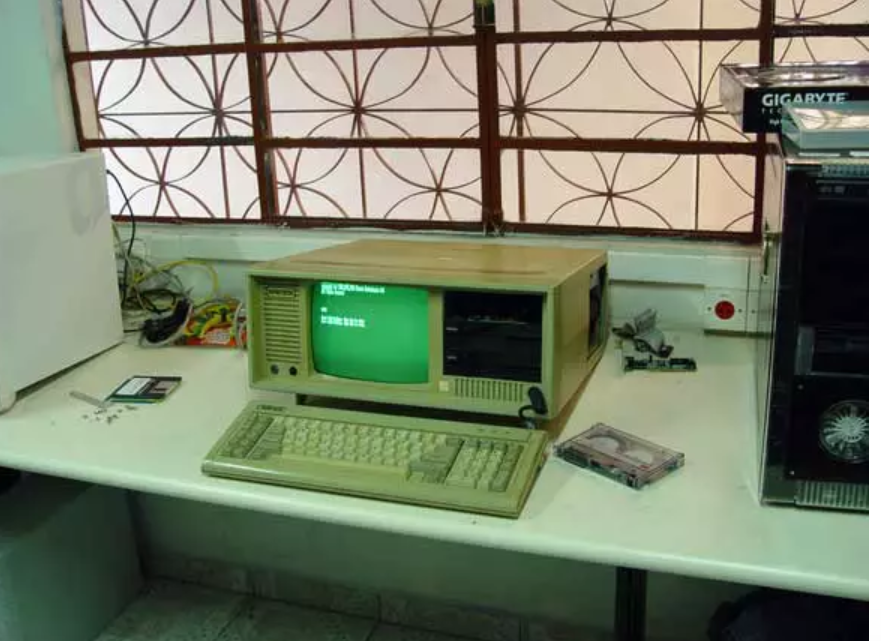
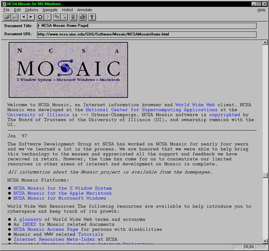

Internettet er efterhånden så udbredt, at alle har mulighed for at koble sig på og gå online ved blot et enkelt klik. Sådan har det ikke altid været, men internettet er muligvis den teknologi, som er vokset mest på kortest tid.
Internettet fik sit gennembrud i 1990’erne og på daværende tidspunkt vides det ikke med sikkerhed, hvor mange der præcis havde adgang, men i 2012 estimeres det, at der var cirka 2,4 milliarder brugere verden over. Tallet er fortsat stigende.
Den første webbrowser så dagens lys i december 1990. Den hed WorldWideWeb og var lavet af samme person der opfandt HTML og the World Wide Web, nemlig Tim Berners-Lee. Den 6. august 1991 markerer dagen for WorldWideWeb’s debut som en offentlig tilgængelig tjeneste på internettet.
Mosaic var den browser, der siges at have populariseret world wide web. Med dens mere grafiske udtryk var mosaic en mere brugervenlig browser. Mosaic gav mulighed for at have billeder i teksten og ikke kun i et separat vindue
